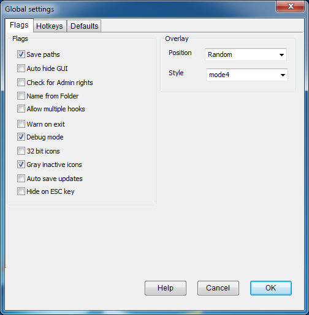
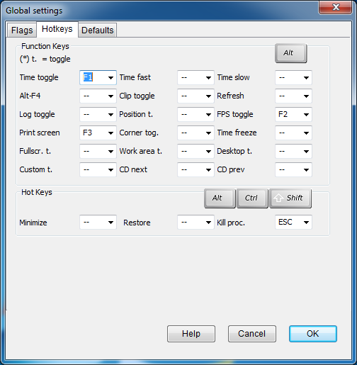
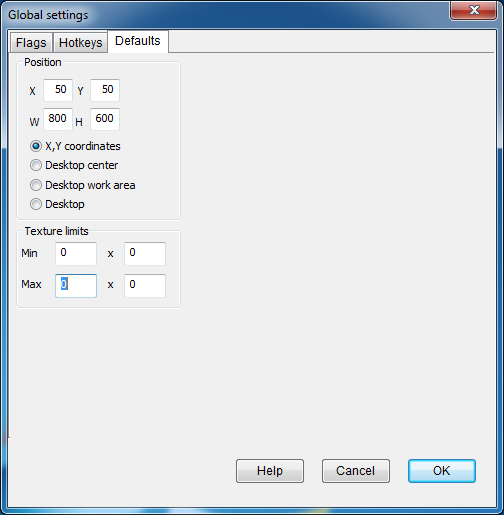

  
|
Save paths |
Writes the last path used for the game folder and import/export directory to dxwnd.ini. These paths will then serve as default values for these folders. Saving the last used path can be useful, but there are some potential incompatibilities and problems (reported mainly on Windows XP) when a saved folder no longer exists. In this case, you may have to manually delete the saved path from dxwnd.ini, and you may prefer to disable this option. |
|
Auto hide GUI |
Minimizes DxWnd while the hooked program runs, restoring the window when the program ends. This only works for programs started through the DxWnd interface. |
|
Check for Admin rights |
Tells DxWnd to autodetect its own administrator permissions at startup and propose a self-elevation if missing. This option can also be modified with a configuration file (see Configuration file). |
|
Name from Folder |
When selected Dxwnd creates the default name from the folder instead of the executable. |
|
Allow multiple hooks |
Allow hooking more than one application at a time. |
|
Warn on exit |
Yes/No prompt when closing Dxwnd. |
|
Debug mode |
Enables debug mode. This option can also be modified with a configuration file (see Configuration file). |
|
32 bit icons |
Use 32 bit icons instead of the default 16 colors. |
|
Gray inactive icons |
When a path can not be found to an executable gray out the icon. |
|
Position |
The combo box defines the position for the DxWnd overlay messages (FPS and time stretching): it can be set in each one of the four window corners, or randomply moving to all corners, or centered in the window. |
|
Style |
Defines the style for the overlay text. |
This section allows you to change the default settings for Dxwnd window size and position.
This area allows you to assign common tasks, like turning on logging or taking a screenshot, to the function keys (the row with F1 through F12 at the top of your keyboard). You can map the following functions:
|
Time toggle |
Toggles between normal and accelerated program speed. This allows you to accelerate/decelerate only part of the gameplay (e.g. during a fight) while running at a normal speed otherwise. |
|
Time slow |
Slows down the hooked program. See Time Slider. |
|
Clip toggle |
Toggles the clipping region ON and OFF so that you can exit the game area and control other tasks or move/resize your game window. |
|
Log toggle |
Toggles logging ON/OFF. Since painting operations can be quite verbose, toggling the log can be a useful trick to get information about a specific program's activity without having to browse tons of log lines. |
|
FPS toggle |
Toggle the FPS display ON and OFF. |
|
Corner tog. |
Toggles "cornerized" mode. Cornerized mode is a fake-windowing mode that leaves the screen at the current (usually higher) resolution while the game is not aware of that. The game then runs at the 0,0 coordinate that corresponds to the top-left corner of the screen. It is useful in when the GDI emulation is not perfect, so it's better to have a cornerized mode than a badly emulated rendering. This feature is intended to handle Blizzard's GDI networking screens. |
|
Fullscr. t. |
Toggles between fullscreen mode and windowed mode. |
|
Desktop t. |
Similar to Fullscreen toggle, toggles between fullscreen emulated mode and windowed mode. The difference is that in Desktop mode the video color settings are still emulated, while the color depth remains unchanged. |
|
Time fast |
Speeds up the hooked program. See Time Slider. |
|
Alt-F4 |
This key is the well known quit command for any task. If the application doesn't react quickly enough to your command, you can set the “Intercept Alt-F4 key” option to cause DxWnd to immediately quit the program. |
|
Refresh |
Forces a surface repaint. Some old games didn't even consider the possibility of a task overriding the game area, so they don't repaint when they should. This is a technical detail, but if your game screen gets dirty, try this key to fix it. |
|
Position t. |
Toggles the window position locking (if enabled). This allows you to temporarily unlock the window, move or resize it, and lock it again. |
|
Print screen |
Captures an image of the current screen in the hooked program and saves it to your computer's clipboard. |
|
Time freeze |
This switches between the normal time mode and a "locked" mode, where the time is not advancing at all. This sometimes produces weird effects, like having all characters in a game stand still while still being able to move the camera. |
|
Work area t. |
Similar to "Desktop toggle," but the window is stretched to fill only the desktop work area rather than the entire desktop area, leaving the taskbar visible. |
|
Custom t. |
Sets a custom toggle key. This key has no predefined meaning, it is reserved for debugging purposes only of experimental DxWnd releases and should not be used. |
|
CD Prev. |
When multiple CD paths are present, the key rotates the currently active CD volume backwards of one unity, cycling in the avaliable disks. For exmple, if there are 3 CD disks configured in folder cd, cd02 and cd03, if the currently active disk is CD2 then the key activates CD1 and, on the next typings, CD3, CD2, CD1, ... again. Beware: the CD switch can be not immediate, it will be scheduled for next time the application will access a virtual CD disk drive. Beware: using the CD prev / next function keys is equivalent to setting the active CD by means of the CD Charger panel, but when the game is configured for proxy mode and run with no DxWnd GUI these keys are the only way to change the mounted CD volume! |
|
CD Next |
Same as "CD prev", but rotating forward: CD1, CD2, CD3, CD1, ... |
This area allows you to assign hot keys to minimize the window, restore it, and kill the process. These functions are accessed by holding down Alt, Ctrl, and Shift, and then pressing the chosen function key (F1 through F12).
This area allows you to set minimum and maximum widths and heights for texture processing. The format is as follows:
Min <minimum width> x <minimum height>
Max <maximum width> x <maximum height>